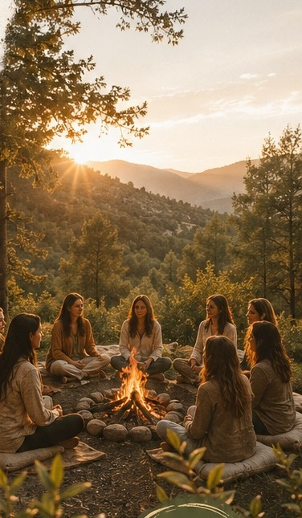

Retiros & Viajes
Retiros y experiencias Casa Eywa para hacer una pausa, descubrir nuevos lugares, compartir, reconectar contigo y regalarte unos días diferentes.
Bienestar · Naturaleza · Conexión · Experiencias con propósito

¿Qué es un retiro Casa Eywa?
Un retiro Casa Eywa es mucho más que salir de viaje.
Es darte permiso para detenerte. Para despertar en un lugar diferente.
Para caminar sin prisa. Para conversar. Para guardar silencio.
Para conocer nuevas personas. Para disfrutar. Para escucharte.
Creamos experiencias que combinan destinos especiales, bienestar, conexión humana y espacios de reflexión, respetando la esencia de cada lugar y de cada grupo.
Cada retiro es diferente. Algunos nos llevan hacia la naturaleza. Otros hacia nuevas culturas, paisajes, sabores y formas de vivir.
Pero todos tienen algo en común:
crear un espacio donde puedas volver a encontrarte contigo.
¿Qué puedes encontrar en estas experiencias?
Dependiendo de la experiencia que elijas, podrás encontrar diferentes momentos y actividades diseñados para disfrutar, explorar y conectar.
Paisajes que invitan a bajar el ritmo, respirar y estar presente.
Espacios para cuidar cuerpo, mente y emociones desde una mirada integral.
Caminar, yoga, estiramientos u otras prácticas de bienestar.
Momentos de pausa, presencia, introspección y conexión interior.
Disfrutar los alimentos desde el placer, la presencia y el encuentro.
Espacios para escucharte, escribir, conversar o simplemente estar contigo.
Herramientas de bienestar y conexión, cuando forman parte del retiro.
Destinos, historias, tradiciones, gastronomía y nuevas formas de mirar el mundo.
Para descansar, contemplar, leer, caminar o simplemente no hacer nada.
Compartir desde la autenticidad, el respeto y la libertad de ser tú misma.
Cada experiencia tendrá una programación y unos servicios específicos. Consulta los detalles del retiro que deseas realizar.
¿Es esto para ti?
No necesitas estar atravesando una crisis.
No necesitas "sanar" nada para poder venir.
También puedes venir simplemente porque quieres regalarte una experiencia diferente.
¿Qué hace diferente a Casa Eywa?
Cada experiencia Casa Eywa busca encontrar un equilibrio entre descubrir el mundo y volver hacia dentro. Integramos:
Destino + bienestar + acompañamiento + conexión + experiencia
Detrás de Casa Eywa existe una trayectoria de más de 20 años en el acompañamiento de procesos de bienestar, junto con formación profesional en terapia ocupacional, terapias alternativas, enfoque holístico y desarrollo personal. Esto nos permite crear experiencias donde la espiritualidad puede convivir con el conocimiento, el disfrute y una mirada profesional.
Aquí no tienes que ser de ninguna manera.
Puedes llegar curiosa, cansada, emocionada, o sin saber exactamente qué buscas.
Solo necesitas estar dispuesta a vivir la experiencia.
Próximos retiros
Descubre los destinos y experiencias que hemos preparado para ti.
Seguridad y confianza
Sabemos que reservar una experiencia fuera de tu rutina implica confianza. Por eso cuidamos cada detalle de la comunicación y planificación de nuestros retiros, desde la información previa hasta el acompañamiento durante la experiencia.
Antes de reservar recibirás información clara sobre:
Y, sobre todo, tendrás un espacio para resolver tus preguntas antes de tomar la decisión.
Tu tranquilidad también hace parte de la experiencia.
Los detalles de cada retiro pueden variar según destino y operador. Consulta siempre la información específica de la experiencia antes de reservar.
Preguntas frecuentes
No. Cada experiencia está diseñada para que puedas participar desde tu propio nivel. Las actividades y requisitos específicos se informarán en cada retiro.
No necesariamente. Puedes venir sola, con una amiga, pareja o acompañante, dependiendo de las características del retiro.
No es necesario tener conocimientos previos. Casa Eywa propone estas experiencias desde una mirada abierta, respetuosa y sin imponer creencias.
No. Cada experiencia tiene su propio concepto, destino y programación. Consulta la información específica del retiro que te interesa.
Cada experiencia tendrá una descripción detallada de los servicios incluidos y no incluidos antes de realizar la reserva.
Sí. Cuando la programación lo permita, buscamos que las experiencias también contemplen espacios para descansar, explorar y disfrutar de tiempo personal.
Sí. Muchas experiencias pueden ser una bonita oportunidad para conocer nuevas personas. Las condiciones específicas dependerán de cada retiro.
Una vez que elijas la experiencia, podrás solicitar la información de disponibilidad, inversión, condiciones y proceso de reserva.
Por supuesto. Queremos que tomes tu decisión con tranquilidad y toda la información necesaria.
Tu próxima experiencia
Unos días para cambiar de paisaje. Para respirar. Para conocer. Para compartir. Para descansar. Para escucharte. Para recordar que tu vida también puede tener espacios reservados para ti.
Tu próxima experiencia puede comenzar con una decisión muy sencilla: darte permiso.